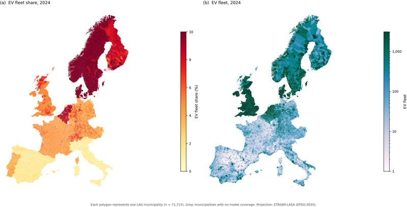
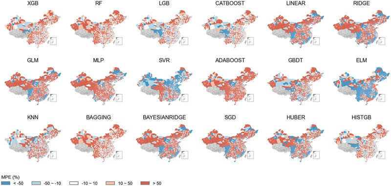
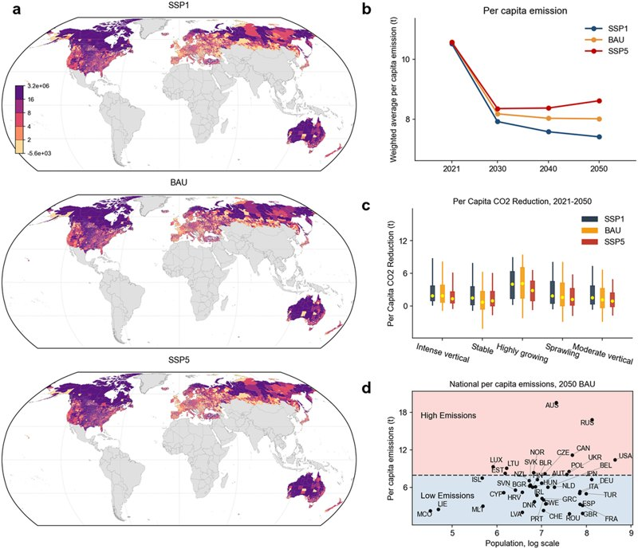

Sep 2026
HU Student Award
Hiroshima University, Japan
Researcher (Specially Appointed)
National Institute for Environmental Studies (NIES), Japan
Yukai Jin is a Researcher (Specially Appointed) at Japan's National Institute for Environmental Studies (NIES). He received his PhD from Hiroshima University in September 2026. His research focuses on urban greenhouse gas emissions, decarbonization pathways, and urban computing. He has published in leading journals, including Scientific Data and Renewable and Sustainable Energy Reviews, and was a visiting scholar at Yale University.

We present a longitudinal dataset of passenger vehicle fleet composition for 71,715 Local Administrative Units across 14 European countries over 2011–2024. An XGBoost-based spatial prediction model allocates official national vehicle statistics to municipalities using GDP per capita, population, and road-masked nighttime light intensity. The dataset distinguishes battery electric, plug-in hybrid, fuel-cell electric, and other vehicles. Independent validation using Eurostat regional data and municipal data from Norway and Sweden yields R² values of 0.82–0.98, supporting comparative analysis of electric vehicle adoption and spatial disparities.

This study evaluates 18 machine learning algorithms using county-level CO₂ emissions in China from 2001 to 2020 and 41 socioeconomic, environmental, and energy features. Nearly all models systematically overestimate emissions across space and time. Feature-selection comparisons and bootstrap uncertainty analysis show that aggressive dimensionality reduction often harms performance, while retaining diverse features helps capture the complexity of urban emissions. CatBoost and LightGBM perform best, highlighting the need to diagnose and correct systematic prediction biases for reliable urban carbon management.

We combine urban typological clustering with a context-aware FiLMSeq2Seq deep learning framework to project CO₂ emissions for 46,833 cities in Annex I countries through 2050 under Shared Socioeconomic Pathways. Five urban typologies exhibit distinct emission trajectories. Under the Business-As-Usual scenario, 31.5% of the 1,335 sprawling cities show emission growth, while moderate vertical cities contribute a total emission reduction of 798.2 Mt. These findings support strategies tailored to urban typology to realize cities’ decarbonization potential.
Hiroshima University, Japan
Hiroshima University, Japan
Hiroshima University, Japan
National Institute for Environmental Studies (NIES), Japan
Guangdong University of Technology
Jiangxi Agricultural University
Teaching Assistant · Hiroshima University
Open datasets from my research.
Jin, Y., & Sharifi, A. (2026). Estimated municipality-level electric vehicle and passenger vehicle fleet composition across 14 European countries, 2011–2024. Scientific Data. https://doi.org/10.1038/s41597-026-08445-z Dataset: https://doi.org/10.6084/m9.figshare.32241864
@article{jin2026evfleet,
author = {Jin, Yukai and Sharifi, Ayyoob},
title = {Estimated municipality-level electric vehicle and passenger vehicle fleet composition across 14 European countries, 2011--2024},
journal = {Scientific Data},
year = {2026},
doi = {10.1038/s41597-026-08445-z}
}
@misc{jin2026evfleetdata,
author = {Jin, Yukai and Sharifi, Ayyoob},
title = {Estimated municipality-level electric vehicle and passenger vehicle fleet composition across 14 European countries, 2011--2024},
publisher = {Figshare},
year = {2026},
doi = {10.6084/m9.figshare.32241864}
}